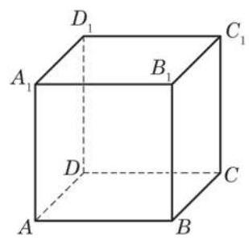
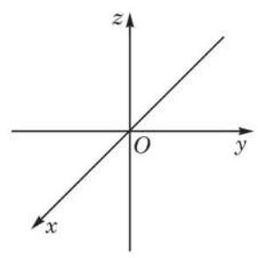
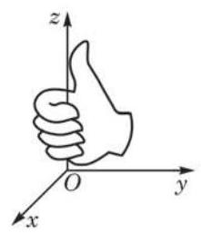
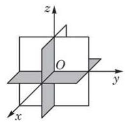
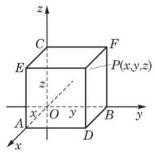
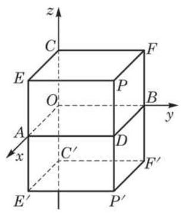
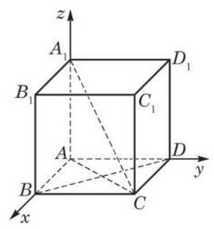
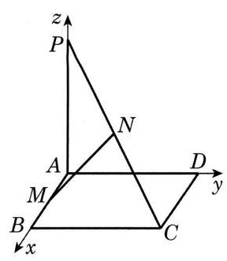
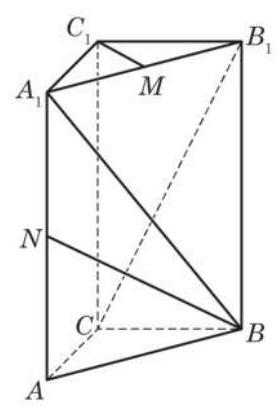

平面向量的坐标表示使得向量的运算可以转化为向量坐标的代数运算, 带来了很大的方便. 空间向量也可以类似处理. 但为此要先建立空间直角坐标系.
1 空间直角坐标系
如图 3-3-1, 在正方体中, 总可以找到从一个顶点出发的三条两两互相垂直的棱,如 与 . 受此启示,从空间一点 出发,可以作三条两两互相垂直的坐标轴,建立空间直角坐标系 (图 3-3-2).

图 3-3-1

图 3-3-2

图 3-3-3

图 3-3-4

图 3-3-5
有了空间直角坐标系, 空间中的点与实数的有序三元组就建立了一一对应.
例题 1
例 1 在空间直角坐标系 中给定点 ,求该点关于坐标平面 的对称点 的坐标.
答案与解析收起 / 展开
解 如图 3-3-6,过点 分别作与三个坐标平面平行的平面,与坐标平面一起围成了长方体 ,根据点 的坐标知道 三点在轴上的坐标分别是 .

图 3-3-6
因为 平面 ,所以点 关于坐标平面 的对称点 在 延长线上,并使 .
为了求出点 的坐标,把长方体 关于坐标平面 作对称: 分别作 的延长线到点 ,使 ,则得到长方体 关于坐标平面 的对称长方体 , 可见点 的坐标由点 在轴上的坐标给出. 又因为点 在 轴上的坐标与点 在 轴上的坐标互为相反数,所以点 、 在轴上的坐标分别是 ,即点 的坐标是 .
不难看出, 、 分别是从点 所作的坐标轴的垂线 (图上未画出)的垂足.
2 空间向量的坐标表示
模仿平面的情况,设 分别是 轴、 轴、 轴正方向的单位向量. 由于三个坐标轴两两互相垂直, 因此这些向量之间的数量积为
从图 3-3-5 可以看出, , 而根据点的坐标的定义， ，所以 的实际含义是
有了这个表达式, 就可以像平面向量那样推知: 如果 与 是坐标表示的向量, 是实数, 那么
这说明: 把向量用坐标表示后, 两个向量相加 (减), 等于把它们的对应坐标相加(减); 一个实数乘一个向量, 等于把这个实数乘它的坐标.
一个向量 的模就是它的位置向量 的终点 与坐标原点 的距离,所以
如果向量不是由位置向量给出, 也可以不通过位置向量得到此向量的坐标表示: 设有空间任意两点 与 ,则
即, 一个向量的坐标等于这个向量的终点坐标减去它的起点坐标.
有了上面两个公式,空间任意两点 与 的距离就很容易求出了,因为这两点的距离 等于向量 的模 . 由此得到
最后, 我们看两个空间向量的数量积如何用坐标表示.
给定两个向量 与 ,把它们写成坐标轴正方向的单位向量的线性组合,就有 与 ,于是
对上式用分配律展开计算,并注意到 是两两互相垂直的向量,且 ,所以
这就是我们所需要的两向量数量积公式

图 3-3-7
存在 ,使得 .
例题 2
例 2 如图 3-3-7,给定正方体 .
(1)求对角线 与 所成角的余弦值；
(2)求证: .
答案与解析收起 / 展开
解(1)以点 为坐标原点，分别以射线 、 、 为 轴、 轴、 轴的正半轴,建立空间直角坐标系. 设正方体的棱长为 ,可得有关点的坐标分别为 、 ,从而 . 于是
.
(2)证明:由 ，得
所以, .
练习 3.3
练习3.3 · 1
- 讨论满足下列条件的点 的坐标 的特征:
(1)点 在坐标平面上; (2)点 在坐标轴上.
答案与解析收起 / 展开
1.(1)点 在坐标平面上: 平面坐标 ； 平面坐标 ； 平面坐标 .
(2)点 在坐标轴上: 轴 ； 轴 ； 轴 .
练习3.3 · 2
答案与解析收起 / 展开
练习3.3 · 3
答案与解析收起 / 展开
习题 3.3
A 组
习题3.3A · 1
- 已知长方体 的棱长 ,以这个长方体的顶点 为坐标原点,分别以射线 为 轴、 轴、 轴的正半轴, 建立空间直角坐标系. 求长方体各顶点的坐标.
答案与解析收起 / 展开
- 以 为坐标原点,分别以射线 为 轴、 轴、 轴的正半轴建立空间直角坐标系,则长方体各顶点的坐标分别为 ,

图 3-R5
习题3.3A · 2
- 已知 垂直于正方形 所在的平面, 分别是 的中点,且 ,分别以射线 为 轴、 轴、 轴的正半轴,建立空间直角坐标系. 求向量 的坐标表示.
答案与解析收起 / 展开
- 如图 3-R5,设正方形边长为 ,则有关点的坐标分别为 , .
的中点分别是 ,故
习题3.3A · 3
- 已知 . 求:
(1)向量 与 的夹角的大小；
(2)向量 与 所在直线的夹角的大小.
答案与解析收起 / 展开
- (1)向量 、 的夹角为 . (2)向量 、 所在直线的夹角 .
习题3.3A · 4
- 已知平行四边形 中的三个顶点的坐标分别为 与 ,求顶点 的坐标.
答案与解析收起 / 展开
习题3.3A · 5
- 设 ,且 . 记 ,求 与 轴正方向的夹角的余弦值.
答案与解析收起 / 展开
B 组
习题3.3B · 1
答案与解析收起 / 展开
习题3.3B · 2
- 给定空间三点 .
(1)求以向量 、 为一组邻边的平行四边形的面积 ；
(2)若向量 与向量 、 都垂直，且 ，求向量 的坐标.
答案与解析收起 / 展开
习题3.3B · 3
- 如图,在直三棱柱 中, , 分别是 的中点. 建立适当的空间直角坐标系, 解决如下问题:
(1)求 的模；
(2)求 ；
(3)求证: .

(第 3 题)
答案与解析收起 / 展开